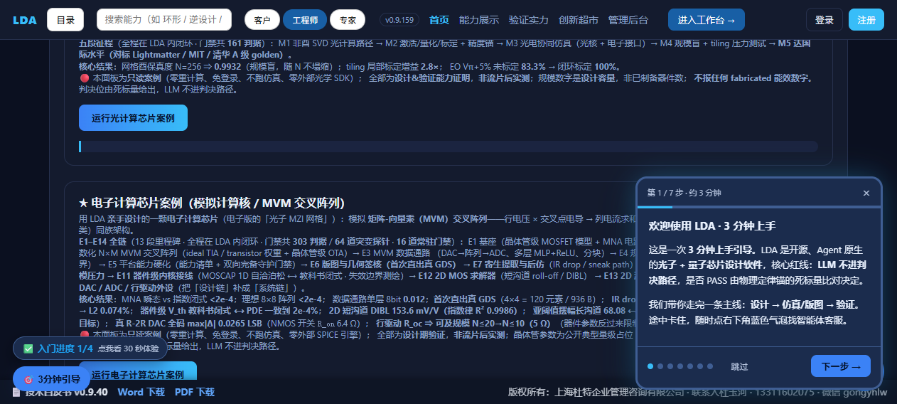
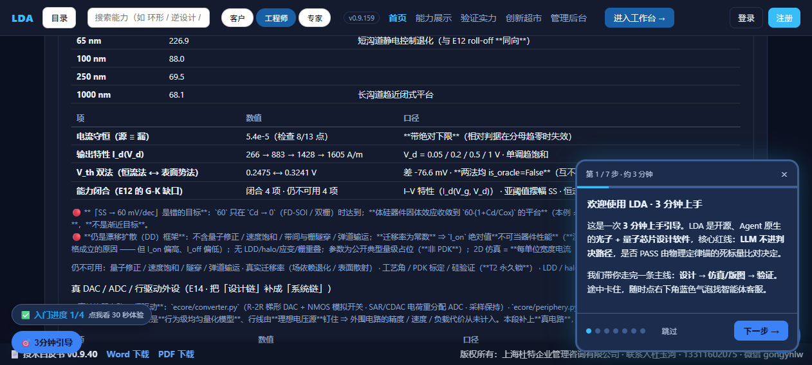
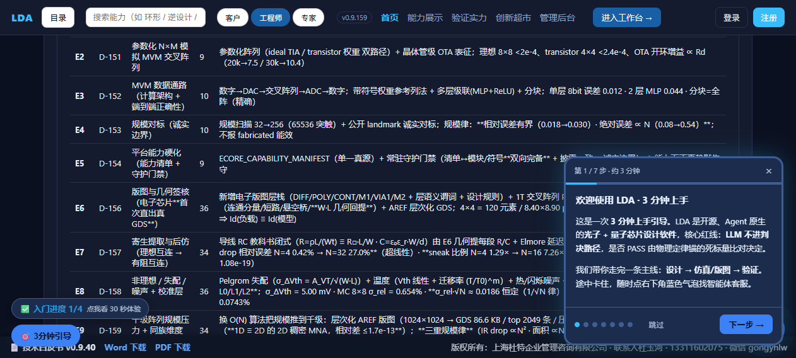

| # | 看哪里 | 应该看到 |
|---|---|---|
| 1 | 卡头摘要行（点按钮后第一行） | 判决 DESIGN_VERIFIED（设计期验证（非流片实测）） · 征程 13 段 · 门禁 303 判据（含 64 条突变探针）· 模块 18 |
| 2 | 卡内 hint 第 2 行 | E1–E14 全链（13 段里程碑 · 门禁共 303 判据 / 64 道突变探针 · 16 道常驻门禁）， 末尾有 → E14 真 DAC / ADC / 行驱动外设（把「设计链」补成「系统链」） |
| 3 | 「E1–E14 全链 · 十三段征程」表 | 最后一行是 E14，编号 D-174…D-176，门禁列 26 |
| 4 | 「真 DAC / ADC / 行驱动外设（E14）」面板 | R-2R DAC 8 bit 全码 256 点 max|Δ| 0.0265 LSB（R_on 6.4 Ω）· SAR+CDAC 电荷守恒 rel 3.9e-12 · 采样保持 ⟷ 离散闭式 5.6e-16 · 行驱动 ⟷ MNA 1.4e-16 |
| 5 | 同面板的「🔴 可及规模上界」小表 | N_max = 20 → 17 → 10 → 3（对应 R_oc = 0 / 1 / 5 / 20 Ω）—— 这是本段最有价值的结论：行驱动输出阻抗会反过来压小可及规模 |
| 6 | 「未闭合项（逐条登记）」表 | 共 14 条，最后两条是 G-M（外围电路为宏模型/抽象）与 G-N（平台缺陷登记：mna.vcvs 极性与 docstring 相反） |
| 7 | 页面顶部右侧版本号 | v0.9.159 |
mna.Circuit.vcvs 的实际电压极性与它自己文档写的不一致，E1–E13 一直带着它上线）。
我们没有偷偷改掉（改了会让前面 13 段已上线的数字全部失效），而是：下游适配 + 显式登记 +
加一条门禁把它锁死。如果你在别的项目里看到"平台缺陷"被静默抹平，那是另一种做法 —— 我们选择公开。


$r = Invoke-RestMethod https://lda.weomnitech.com.cn/api/ecore_demo
$r.case_id
$r.span
$r.device_periphery.scale_ceiling.n_max
$r.gaps | Select-Object -Last 2 | ForEach-Object { $_.id + " " + $_.title }
你会看到 LDA-E · 电子计算芯片（模拟计算核 / MVM 交叉阵列）· E1–E14 全链、
milestones=13 / gate_checks=303 / probe_checks=64 / modules=18、
20 17 10 3，以及 G-M、G-N 两条诚实边界。